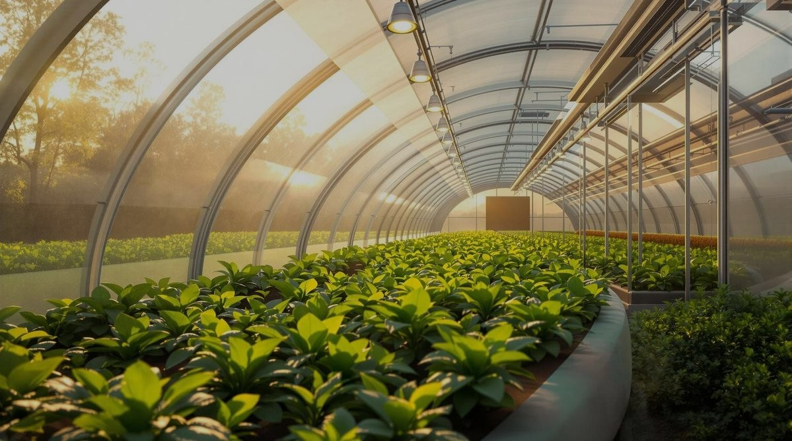
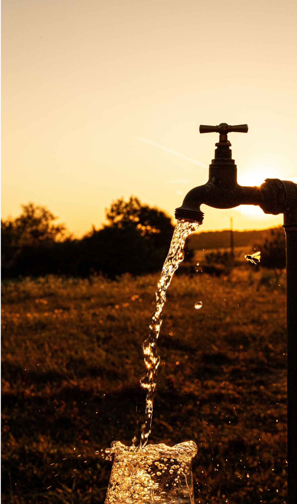
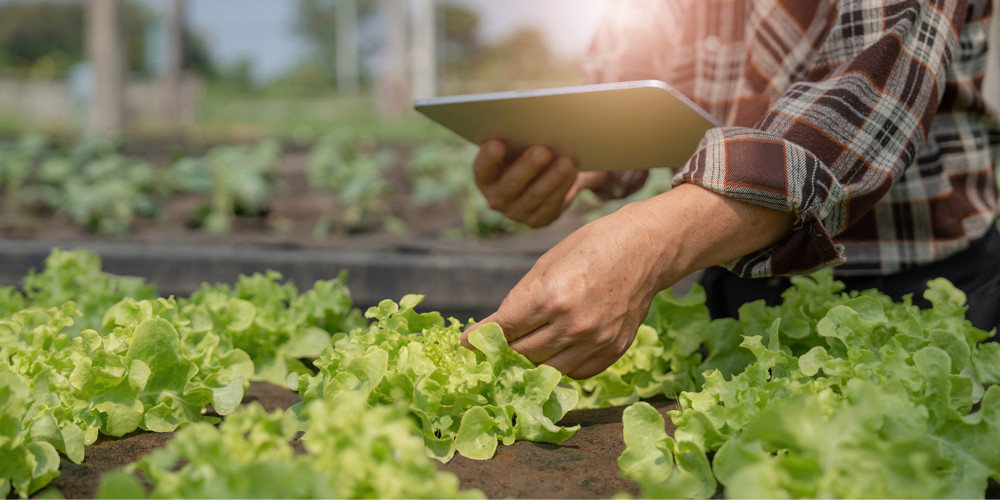
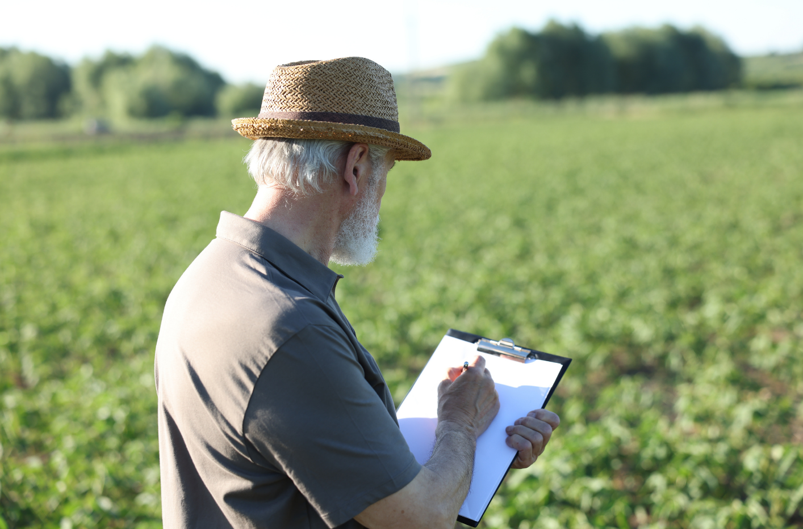

Agricultural Analysis System
TARAS
Real-time sensing, irrigation recommendations, disease detection, digital twin monitoring, and sustainability tracking in one platform.

Real-time sensing, irrigation recommendations, disease detection, digital twin monitoring, and sustainability tracking in one platform.
Many farmers still rely on intuition rather than data when making irrigation and crop management decisions.

Irrigation decisions are often made without reliable data.

Changing conditions make traditional decisions unreliable.
Symptoms are often noticed too late.

Farmers can't continuously monitor crop conditions.
An integrated AI-powered platform for smarter farming.
Real-time soil and climate sensing with integrated IoT sensors.
Predicts optimal watering times and quantities based on field conditions.
Instant AI leaf analysis for early disease identification and prevention.
Visual field moisture maps and 3D digital representations of your farm.
Track water usage and carbon footprint to optimize environmental impact.
Monitors soil & climate
Collects wireless data
Processes in real-time
Detects disease patterns
Delivers actionable insights
Model Lead
Develops and improves the irrigation recommendation model used in TARAS.
Backend Lead
Builds the server-side system, APIs, and database integration.
UI Lead
Designs the user interface and improves the user experience.
Vision Lead
Works on image processing and plant disease detection features.